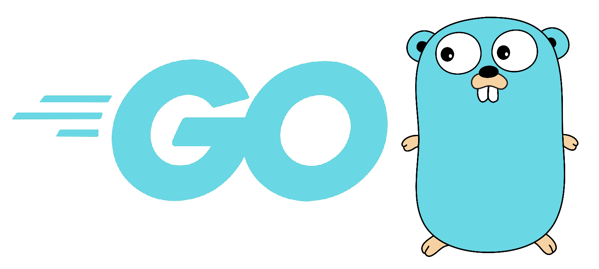
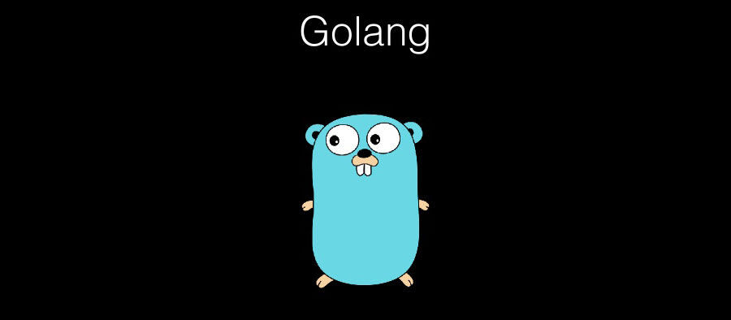
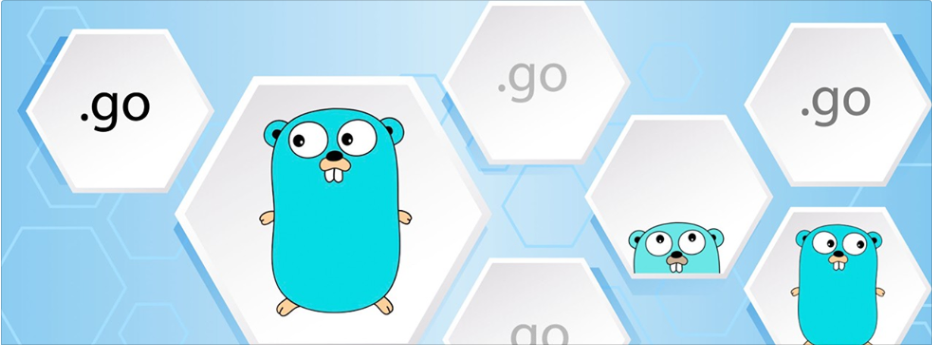

Go Dili nedir?

Go, diğer adıyla;Golang;giderek ünlenen ve çoğu programcının bir an önce öğrenmesi gereken, Google tarafından desteklenen değerli ve açık kaynak kodlu bir programlama dilidir.
1. Go Nedir?
Go, diğer adıyla Golang 2007 yılında adımları atılan, 2009 itibariyle açık bir şekilde adı dile getirilen,
2012 ortalarına doğru Go 1.0‘a ulaşan, arkasında Ken Thompson, Rob Pike ve Robert Griesiemer gibi geliştiricilerin bulunduğu ve Google tarafından desteklenen, basitliği ve sunduğu performansla öne çıkan, oldukça genç sayılabilecek, açık kaynak bir programlama dilidir.
“Go severler” kendilerini gopher;olarak nitelendiriyorlar.
Gopher, TCP/IP protokolü olmasına karşın logonun da sembolize ettiği amerikan yersincabıdır (kemirgen).

2. Go İle Neler Yapılabilir?
- Go dilinin birincil amacı sistem programlamalarının yapılmasıdır. Aktif biçimde sunucu tarafında kullanılması için geliştirilen Go’yu, sunucu ve alt sistemler geliştirmek için harika bir dil olarak görebiliriz.
- Go web için hem hızlı geliştirme hem de yüksek performansıyla kaliteli projeler üretmenizi sağlayabilir
- Henüz kısıtlı örneklerle karşımıza çıkıyor olmasına rağmen Google’ın, Go’yu mobil işletim sistemi Android’de kullanma planı vardır. Gelecekte Go’yu bilen geliştiriciler sadece sunucu ve sistem tarafındaki işleri halletmekle kalmayarak, kendi Android mobil uygulamalarını da Go ile verimli biçimde geliştirebilecekler.
- Go gömülü sistemlerde kullanılan bir programlama dili olarak da karşımıza çıkabilir. Geliştirici topluluğunun büyük bir bölümü buna inanıyor olsa bile, gömülü sistemlerde hali hazırda süregelen C ve C++ haçlı savaşları nedeniyle bunu şimdilik kestirmek tam olarak mümkün olmayabilir.

3. Neden Go Kullanmalıyım?
- Goda bir işi yapmanın genellikle sadece bir yolu vardır. Bu da herkes tarafından anlaşılan düzenli kodlar ve düzen demektir.
- Go tek bir dosyaya derleniyor. Bir tane binaryyi kopyalamak yeterli. Özetle mevcut kodunuzu onlarca sunucuya sorunsuzca yerleştirebilirsiniz.
- Karışık şöz dizimi kurallarından kurtulabilirsiniz. Goda sadece 25 tane keyword var (C de 37 tane var; C++ da 84 var ve sayı gittikçe artıyor)
- Basit ve geriye dönük uyumluluğu ayrı bir avantajıdır.
- Eşzamanlı çalışma (concurrency), static typed ve garbage collection ise diğer önemli avantajlarından birisidir.
4. Go Dilini Kimler Kullanıyor?
Avantajlı ve pratik bir programlama dili olması Go dilini dev markaların hedefi haline getirmiştir. Google, Go dili aracılığıyla kullanıcılarına daha hızlı bir internet deneyimi armağan etti. Ancak Google dışında Go dilini kendi sistemini iyileştirmek için kullanan daha farklı teknoloji şirketleri de vardır. Bu şirketlerden bazıları: Google Amazon Dropbox Ubuntu Facebook Twitter Apple Github Koding